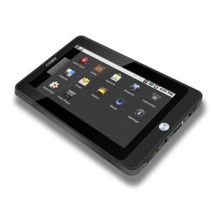
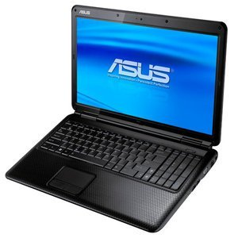
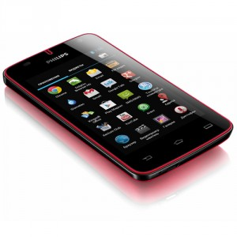

Главная страница
Преимущества и недостатки планшетных ПК
 Планшетные компьютеры получили в настоящее время широкое распространение на Западе, хотя на рынке эти устройства появились сравнительно недавно. В России продажи планшетов стартовали чуть позднее, что сказалось на их популярности. Тем не менее, с каждым месяцем счастливых обладателей планшетных компьютеров в нашей стране становится все больше. В чем причины повышенного интереса к подобного рода устройствам?
Планшетные компьютеры оснащены сенсорным экраном вместо традиционной клавиатуры и мыши, толщина их корпуса составляет не более полутора сантиметров, а вес — не более 500 граммов. Планшеты, в первую очередь, подкупают именно своей компактностью и малым весом, что дает возможность пользоваться такими устройствами практически в любом месте, где бы Вы ни находились.
Согласно последним аналитическим исследованиям, планшетные компьютеры должны в ближайшие годы отвоевать серьезную долю рынка у нетубков и классических ноутбуков. Какие же преимущества и недостатки есть у планшетных компьютеров? Имеет ли смысл покупка планшета вместо второго ПК для домашних пользователей?
Для ответа на эти вопросы необходимо, прежде всего, выделить основные достоинства планшетов, благодаря которым эти устройства могут быть интересны обычным пользователям:
- Сенсорный экран
Большой плюс планшетного компьютера – это, конечно, наличие сенсорного экрана, который заменяет и клавиатуру, и мышь. С сенсорным экраном очень удобно работать, особенно при выполнении стандартных задач — просмотра электронной почты, составления расписаний и планов.
Для комфортного пользования ноутбуком Вам все равно придется находить место, куда его можно положить. А для планшетных компьютеров это совсем необязательно, благодаря опять же наличию сенсорного экрана. Соответственно, пользоваться таким устройством можно хоть на станции метро, хоть в автомобиле или самолете.
- Компактность
Габаритные размеры планшетов невелики, поэтому такое устройство можно носить с собой повсюду. Планшет легче и тоньше традиционных ноутбуков, а значит, он может стать идеальным спутником во время путешествий и деловых поездок.
- Удобство чтения электронных книг
Планшетный компьютер очень удобно использовать в качестве электронной читалки, он позволяет читать электронные книги в самых разных форматах. Но самое главное, что планшеты дают Вам возможность читать книгу, используя вертикальную ориентацию экрана. То есть экран можно развернуть на 180 градусов так, как Вам будет наиболее комфортно.
- Планшет — прекрасный инструмент для совещаний
Поскольку сенсорный экран в планшетах позволяет видеть изображение под разным углом и с разных ракурсов, то это устройство отлично подходит для проведения деловых совещаний и презентаций, если Вам требуется показать что-то с экрана. С помощью такого портативного устройства можно быстро сделать необходимую заметку или найти нужный Вам материал. При использовании планшета для выполнения пометок или аннотаций, он словно приближает Вас к привычной работе с бумагой и ручкой.
- Встроенные модули Wi-Fi и 3G
Благодаря встроенным модулям Wi-Fi и 3G Вы сможете быстро выйти в Интернет. При этом пользоваться планшетом гораздо удобнее, чем ноутбуком.
- Мультимедийные возможности
Планшетный компьютер позволяет просматривать видеролики в дороге или слушать любимые музыкальные композиции. Это устройство также зачастую оснащается встроенной камерой и микрофоном.
- Быстрота работы
Надо сказать что, проигрывая в мощности ноутбуку, большинство планшетов, тем не менее, обеспечивают даже более высокую скорость работы со стандартными приложениями. Правда, в планшетах существуют ограничения в многозадачности и работе с определенными «тяжелыми» приложениями. Зато планшет практически мгновенно приводится в состояние боевой готовности. Планшетный компьютер за считанные секунды, одним нажатием пальца, позволит Вам начать работу в сети Интернет или с офисными приложениями.
Недостатки планшетов
Однако, как и у каждого портативного устройства, у планшетов существуют и свои минусы, о которых необходимо помнить при принятии решения о покупке планшетного компьютера:
- Проблемы с запуском «тяжелого» программного обеспечения
Планшеты подходят для выполнения большинства офисных задач и работы в сети Интернет, однако они плохо справляются с запуском специализированного программного обеспечения, например, того же фотошопа. Для работы с «тяжелыми» программами Вам придется все же пользоваться домашним ПК или ноутбуком.
- Дисплей
Используемый в планшетных компьютерах дисплей обычно имеет не достаточно высокое разрешение, чтобы с комфортом смотреть качественное видео, вроде полноценного телевизионного фильма или сериала. Кроме того, из-за использования специального защитного слоя на экране несколько ухудшаются параметры яркости.
- Высокая цена
Это, пожалуй, пока главный минус планшетов, поскольку за планшетный компьютер Вам может быть придется отдать в два раза больше, чем за весьма приличный нетбук. К тому же в России цены на планшетные компьютеры пока остаются немного завышенными по сравнению со стоимостью аналогичных устройств в Америке или Европе. Одним словом, пока позволить себе планшетный компьютер могут далеко не все.
Итак, можно сказать, что планшетный компьютер является многофункциональным мобильным устройством, которое подойдет для путешествий, деловых поездок, презентаций и ежедневного пользования. Он предоставляет Вам полноценный доступ к сети Интернет, медиа контенту и различным «легким» приложениям.
Отпугивает пока только стоимость планшетных компьютеров иногда превышающая стоимость нетбуков и достаточно малый ассортимент моделей по сравнению с нетбуками и ноутбуками. Тем не менее, очевидно, что планшетные компьютеры чрезвычайно перспективные устройства, которые благодаря совершенствованию технологий и появлению новых моделей в скором времени потеснят с рынка другие виды портативных устройств.
Преимущества и недостатки ноутбуков
 Ноутбук — портативный персональный компьютер, в корпусе которого объединены типичные компоненты ПК, включая дисплей, клавиатуру и устройство указания (обычно сенсорная панель или тачпад), а также аккумуляторные батареи. Ноутбуки отличаются небольшими размерами и весом, время автономной работы ноутбуков изменяется в пределах от 1 до 6-8 часов.
Сравнение ноутбуков и настольных компьютеров
Преимущества ноутбуков перед настольными ПК:
Малый вес и габариты. Даже ноутбуки категории замена настольного ПК можно легко переместить в другое место. Ноутбук можно взять в командировку, на дачу, в отпуск. Перемещение настольного компьютера в другую комнату/кабинет зачастую представляет собой проблему, не говоря уже о перемещении в другой город.
Для работы не обязательно подключать внешние устройства. Ноутбук включает в себя встроенные дисплей, клавиатуру и устройство указания (обычно тачпад, а к настольному компьютеру все эти устройства необходимо подключать отдельно.
Возможность автономной работы. Наличие аккумулятора позволяет ноутбуку работать в условиях, когда, электрическая сеть не доступна (в поезде, самолете, автомобиле, кафе и просто на улице). Настольный компьютер может работать автономно очень недолгое время и только при наличии источника бесперебойного питания.
Возможность подключения к беспроводным сетям. Практически все ноутбуки (за исключением некоторых сверхбюджетных моделей) оснащены встроенным Wi-Fi адаптером, что позволяет подключиться к инернету без проводов. Точки доступа Wi-Fi есть во многих кафе, развлекательных центрах, аэропортах, гостиницах. Существуют также городские Wi-Fi сети, позволяющие подключиться к беспроводной сети во многих районах города. Настольные компьютеры обычно не содержат встроенного Wi-Fi адаптера (за исключением некоторых дорогих моделей и большинства неттопов), впрочем, для стационарных компьютеров данный недостаток несущественен.
Недостатки ноутбуков
Высокая цена. Пожалуй самый главный недостаток ноутбуков. Полностью укомплектованный настольный компьютер (в комплекте с монитором, устройствами ввода (клавиатурой и мышкой) и акустической системой) равной с ноутбуком стоимости будет более производительным. Низкая максимальная производительность. Компактные размеры ноутбуков предъявляют особые требования к охлаждению, поэтому компоненты используемые в ноутбуках имеют жесткие ограничения по тепловыделению, а следовательно и мощности. Даже мощные игровые ноутбуки и мобильные рабочие станции не могут сравниться с производительными настольными ПК, предназначенными для таких требовательных задач как компьютерные игры, трехмерное моделирование и проектирование, рендеринг, инженерные расчеты и т.п. Немногочисленные дескноуты исправить положение не могут, поскольку для них существуют те же ограничения по габаритам и тепловыделению, что и для других ноутбуков. Поэтому в дескноутах устанавливаются не самые производительные настольные процессоры и используются мобильные версии видеокарт.
Ограниченность модернизации. В отличии от настольных компьютеров возможность модернизации ноутбуков сильно ограничена. В портативных компьютерах как правило предусмотрена возможность самостоятельной замены ОЗУ и жёсткого диска. Модернизация видеокарты в большинстве ноутбуков не предусмотрена, хотя встречаются модели, позволяющие осуществить и замену графического адаптера. В случае необходимости замены других компонентов, в том числе процессора и дисковода оптических дисков рекомендуется обращаться к квалифицированным специалистам. В розничной продаже мобильные версии процессоров и видеокарт практически не встречаются.
Проблемы совместимости с различными операционными системами. Производители ноутбуков редко осуществляют поддержку семейства операционных систем, отличных от предустановленной на данную модель ноутбука. Кроме того, в ноутбуках часто используются специфические компоненты, поэтому проблемы совместимости с другими ОС возникают значительно чаще, чем для настольных компьютеров.
Недостатки ноутбуков, являющиеся следствием мобильности портативных компьютеров
Качество встроенных компонентов. В отличие от настольных компьютеров, в ноутбук встроены дисплей и устройства ввода (клавиатура и тачпад}. Это является несомненным достоинством ноутбуков, но вместе с тем качество и удобство использования встроенных компонентов зачастую невысоки. Клавиатура ноутбуков обычно имеет меньше клавиш, чем настольная (за счёт совмещённого цифрового блока клавиш), а размеры клавиш, особенно у субноутбуков и нетбуков, могут быть очень маленькими и неудобными для некоторых пользователей. Тачпад менее удобен чем компьютерная мышь. Угол обзора и цветовой охват мониторов ноутбуков невысоки, что делает их практически непригодными для обработки фотографий, размер экрана в большинстве моделей довольно небольшой. Следует отметить, что перечисленные недостатки встроенных элементов вполне закономерны для мобильных устройств и их можно легко компенсировать подключением внешних компонентов (монитора, клавиатуры, компьютерной мыши), однако это увеличивает конечную стоимость ноутбука и несколько снижает мобильность портативного компьютера.
Повышенная вероятность поломки. Мобильность ноутбуков порождает еще одну проблему, которую тоже иногда заносят в недостатки портативных компьютеров - большая вероятность поломки по сравнению с настольным ПК. Ноутбуки чаще роняют. Существует вероятность сломать дисплей ноутбука при закрытии крышки (если между клавиатурой и дисплеем попадет посторонний предмет). Если залить клавиатуру ноутбука какой-либо жидкостью (например кефиром), то велика вероятность выхода портативного компьютера из строя (в то время как в настольном компьютере из строя выйдет только клавиатура). Вместе с тем вероятность поломки Защищённых ноутбуков обычно гораздо ниже чем у настольных компьютеров и сопоставима с промышленными компьютерами.
Преимущества и недостатки смартфонов
 В наше время смартфоны становятся все более востребованными. В результате каждый производитель старается заниматься выпуском не обычных мобильных телефонов, а смартфонов. Тем не менее, может ли быть такой выбор правильным для покупателей? Возможно, лучше потратить больше времени на поиски, но все-таки найти мобильный телефон, который будет отвечать классическим стандартам? Для того, чтобы ответить на данный вопрос, лучше всего ознакомиться с преимуществами и недостатками смартфонов.
Главным отличием смартфонов является высокий уровень функциональности. Данный критерий можно назвать одним из самых важных в наши дни. В результате производители смогли существенно увеличить объем памяти, благодаря чему у людей появилась замечательная возможность загружать многочисленные приложения, которые могут пригодиться в работе. Также есть возможность пользоваться специальными гаджетами для того, чтобы всегда знать последние новости, погоду на сегодняшний и следующий день, оставаться на связи даже с интернет-знакомыми! Следует отметить то, что браузеры, которые можно использовать на смартфонах, оказываются очень удобными, быстрыми и функциональными. Выход в интернет ускорился, а ведь это может только радовать!
Недостаток смартфонов всего один – это хрупкие микросхемы, которые защищены только пластмассой. Это приводит к риску того, что телефон может не пережить даже слабого удара, не говоря уже о падении и контакте с водой. В некоторых случаях ремонт может быть проведен, но он потребует больших непредвиденных затрат.
Лично от семя хочу сказать, что для общения, переговоров больше подходят cdma телефоны, они надежнее. Покупать лучше в проверенных сервисах, например, на сайте intercdma.ua можно купить такой телефон за сравнительно дешевую цену, да и некоторые модели обойдутся дешевле за смартфоны.
Итак, стоит ли выбирать смартфон? Конечно, стоит, если вы уверенны в том, что сможете обращаться со смартфоном аккуратно и гарантировать таким отношением продолжительную эксплуатацию!
Наверх